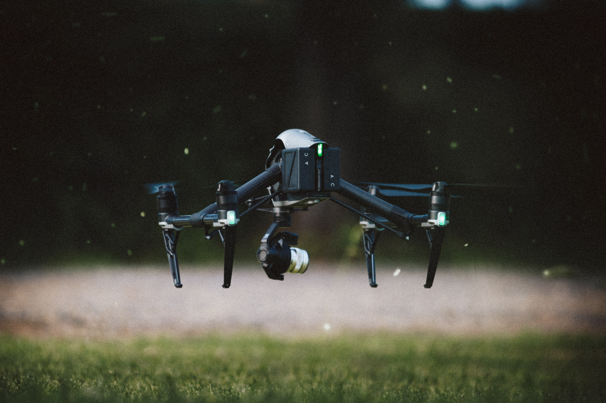
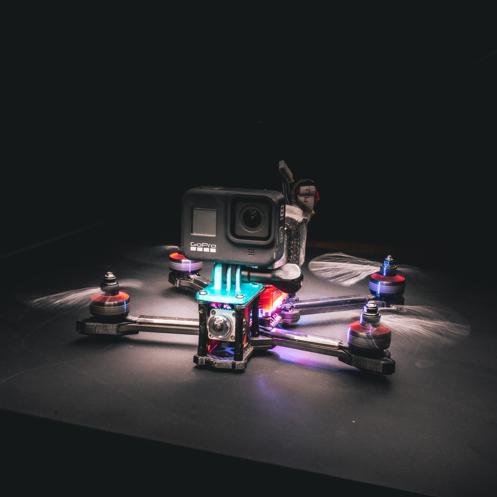
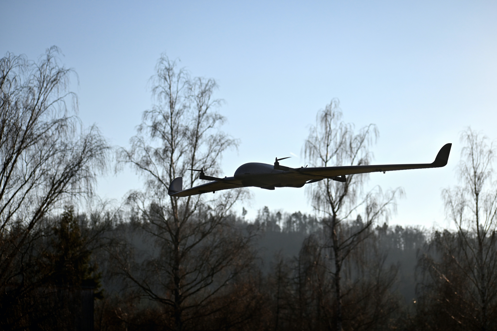
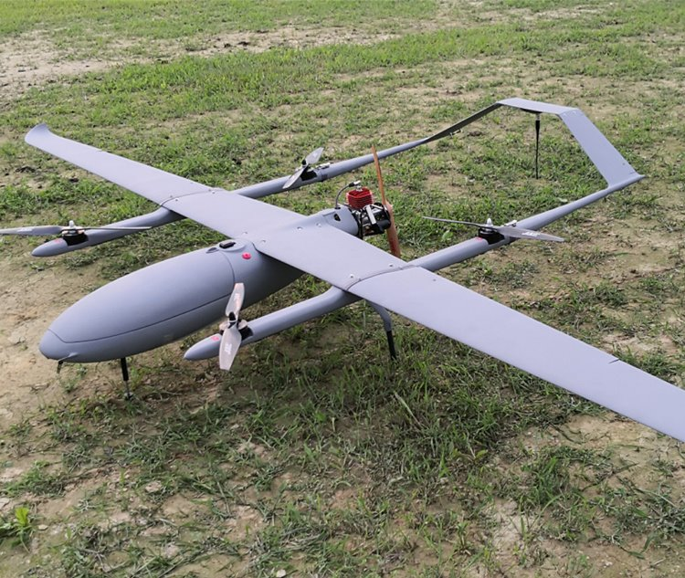
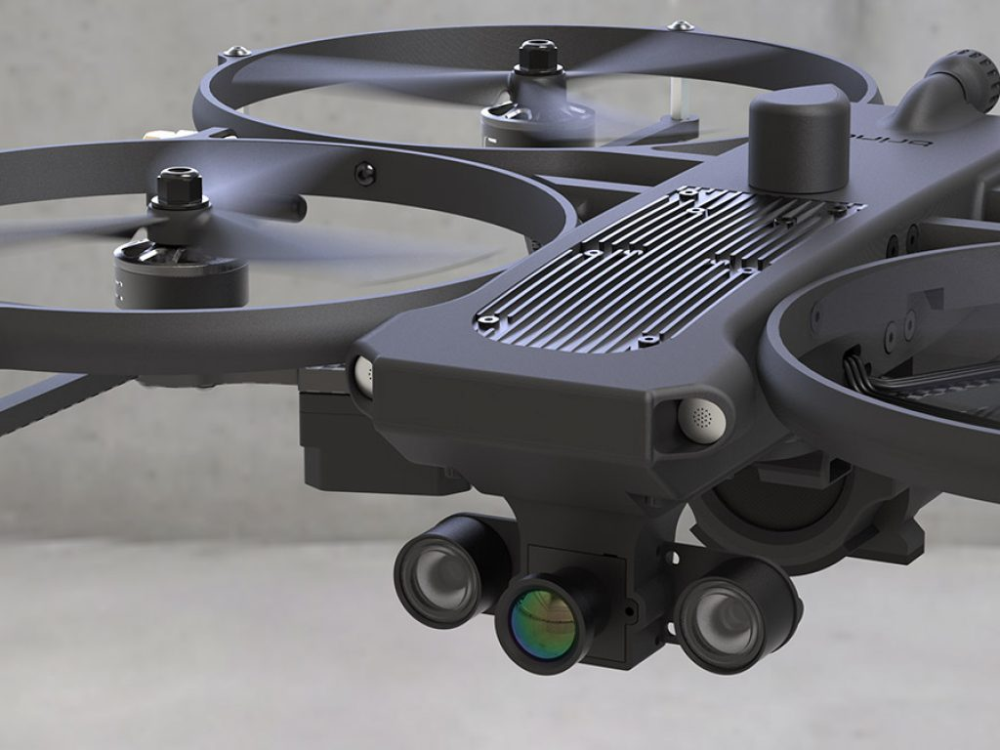
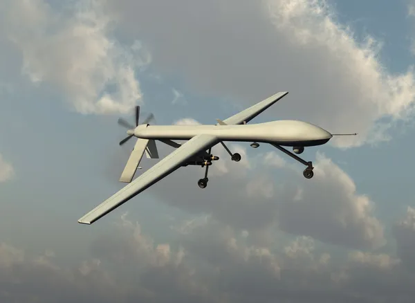

Rodzaje:
Na dół
Wielowirnikowe

Zwykłe drony

Również są wyścigowe tzw. FPV
Stałopłaty

Przypomina szybowiec

Tutaj hybrydowy szybowiec
Wojskowe Taktyczne i Bojowe

Mają np. termowizje

Mogą przenosić rakiety itp.